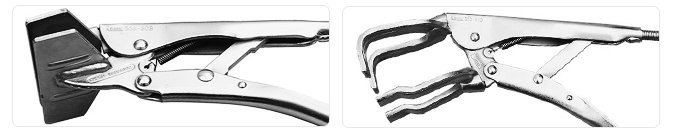

คีมล็อคเป็นเครื่องมืออเนกประสงค์ที่รวมเอาจุดเด่นของเครื่องมือทั้งสี่มารวมเข้าไว้ด้วยกัน ไม่ว่าจะเป็นคีม กุญแจเลื่อน ปากกา (หนีบจับวัตถุ) และคีมตัด คีมล็อคเป็นคีมที่ถูกออกแบบมาให้ล็อคโดยถือวัตถุไว้แน่นโดยไม่ต้องใช้มือจับ มีหลายรูปแบบของคีมล็อคที่ออกแบบมาสำหรับการใช้งานที่หลากหลาย มีรูปร่างลักษณะคีมหัวใหญ่ๆ ที่มีสลักกดเอาไว้ล็อคขนาดหัวได้
คีมชนิดนี้ถูกออกแบบมาเพื่อใช้ล็อคหรือจับยึด หนีบยึด บิด เกี่ยว งัด ตัดกับวัตถุนั้นๆ เพื่อป้องกันการหมุนหรือเลื่อนของวัตถุ ปากคีมสามารถปรับขยายหรือล็อคให้แน่นได้ โดยปรับที่สกรูตรงปลายด้าม ตัวคีมผลิตจากเหล็กทำให้มีน้ำหนัก สามารถจับใช้งานได้อย่างมั่นคง คีมล็อคนี้ถือว่าเป็นคีมชนิดหนึ่งที่ต้องมีติดไว้เลย เพราะสามารถใช้งานได้อเนกประสงค์
ประเภทของคีมล็อค
วิธีการใช้คีมล็อค
วิธีบำรุงรักษาคีมล็อค
ประเภทของคีมล็อค
STRAIGHT JAW : คีมล็อคปากตรง CURVED JAW : คีมล็อคปากโค้ง
LONG JAW : คีมล็อคปากแหลม (ตรง) LONG ROUND JAW : คีมล็อคปากแหลม (โค้ง)
C-CLAMP : คีมล็อคตัวซี (ก้ามปู) C-CLAMP (with knurled swivel pads) : คีมล็อคตัวซี ชนิดมีแผ่นรอง
MULTI-PURPOSE GRIP WRENCH : คีมล็อคเอนกประสงค์ รวมปากตรง ปากโค้ง และปากกว้าง
SHEET METAL CLAMP : คีมล็อคแผ่นโลหะ WELDER CLAMP : คีมล็อคงานเชื่อม

AXIAL GRIP WRENCHES : คีมล็อคแกนชิ้นงานมีหลายรูปแบบ เลือกใช้ตามรูปทรงของชิ้นงาน
Back to top
วิธีการใช้คีมล็อค
คีมล็อค เป็นเครื่องมือช่างสำหรับใช้หนีบจับและยึดวัตถุรูปทรงต่างๆ ให้ล็อคอยู่กับที่ได้อย่างแน่นหนา โดยไม่ทำให้เกิดการแตกหักของชิ้นงานอย่างมีประสิทธิภาพ สิ่งที่คุณต้องทำคือทำตามขั้นตอนเหล่านี้
1. ขั้นตอนแรกคือเลือก คีมล็อค ที่เหมาะสมเพื่อช่วยในการทำงานของคุณ
2. บีบก้านล็อค เพื่อเปิดคีมขึ้นจนสุด
3. วางปากจับบนวัตถุที่คุณต้องการ
4. หมุนสกรูปรับตามเข็มนาฬิกาหรือทวนเข็มนาฬิกาเพื่อปรับช่องกรามให้พอดีกับขนาดของวัตถุ ขันสกรูตามเข็มนาฬิกาให้มากขึ้นหากต้องการแรงบิดมากขึ้น
5. บีบที่ก้านจับเพื่อล็อค
6. หลังจากเสร็จแล้ว กดคันก้านล็อคออกเพื่อปลดล็อคนั่นเอง
Back to top
วิธีบำรุงรักษาคีมล็อค
1.ใช้คีมให้ถูกประเภทกับงาน
2.ไม่ควรบีบคีมแรงเกินไปเพราะจะทำให้คีมหัก
3.ไม่ควรใช้ค้อนทุบคีมแทนการตัด
4.ไม่ใช้คีมแทนค้อนหรือเครื่องมืออื่นๆ
5.เช็ดทำความสะอาด หยดน้ำมันที่จุดหมุน แล้วชโลมน้ำมันหลังการใช้งาน
Back to top
แหล่งที่มา : https://itoolmart.com/blog/content/7dkw9
แหล่งที่มา : https://hmgroupthailand.com/th/blog/detail/maintenance-tools/